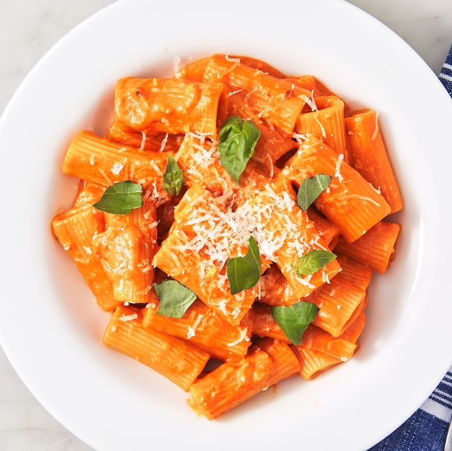

Penne Alla Vodka

Description
According to Delish, this is "the best vodka sauce any of [their test kitchen] has ever had.
A key point to this recipe is swapping out canned tomatoes for tomato paste, which has a more concentrated flavor, and makes for an overall smoother sauce texture.
Ingredients (for 4 servings)
- 3 tablespoons butter
- 1 shallot, minced
- 2 cloves garlic, minced
- 1/2 cup tomato paste
- 1/2 teaspoon crushed red pepper flakes
- 2 tablespoons vodka
- Kosher salt
- 1 pound tubed pasta, such as penne or rigatoni
- 1/2 cup heavy cream
- 1/2 cup freshly grated Parmesan, plus more for serving
- Basil, for serving
Steps
- In a large skillet over medium heat, melt butter. Add shallot and garlic and cook, stirring frequently, until softened, 4 to 5 minutes.
- Add tomato paste and red pepper flakes and cook, stirring frequently, until paste has coated shallots and garlic and is beginning to darken, 5 minutes.
- Add vodka to pot and stir to incorporate, scraping up any browned bits from the bottom of the pot. Turn off heat.
- Bring a large pot of salted water to a boil and cook pasta until al dente. Reserve 2 cups of pasta water before draining.
- Return sauce to medium heat and add 1/4 cup of pasta water and heavy cream, stirring to combine. Add half the Parmesan and stir until melted. Turn off heat and stir in cooked pasta. Fold in remaining Parmesan, adding more pasta water (about a tablespoon at a time) if the sauce is looking dry. Season with salt if needed. Serve topped with more Parmesan and torn basil leaves.